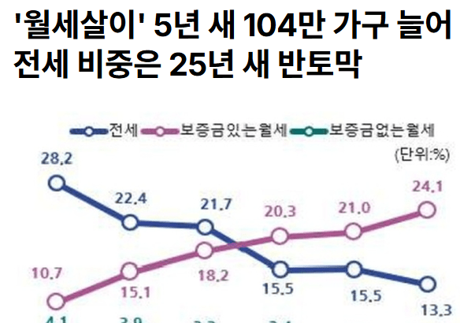

기사 https://www.leadeconomy.co.kr/news/articleView.html?idxno=11474
전세는 꾸준히 없어지는 수순인듯..

기사 https://www.leadeconomy.co.kr/news/articleView.html?idxno=11474
전세는 꾸준히 없어지는 수순인듯..
전세 돈모으기 좋았던건 팩트지 그 리스크가 상대적으로 큰것 뿐
실제로 서울시신혼부부임차보증금대출이란 전세 지원제도로 최대 2억까지 저금리로 빌려주고 그걸로 3년 딱 살고 집 매수할 돈 모아서 매수까지함
전세는 돈 모을수 있는구조가 맞긴해 ㅋㅋㅋㅋ
전세 3억 > 보증금3억+ 월세40 이러면 전세가 없어지는건가??
걍 주거비만 오른거지
같은 집이 전세 3억에서 보증금 3억 + 월세 40으로 바뀐거면 그렇지.
서울기준으로는 중기청대출받은게 아닌이상 전세이자내는거보다 걍 월세내는게 싸더라 ;;
전세 없어지면 월세 올라가... 기존에 월세가 낮추고 있던게 전세였는데 브레이크던 전세가 사라지면 이제 남은건 다른 해외 대도시들 처럼 월세 폭등인거야
자살양성 시스템 삭제 굳
전세금 거치 제도도 안해
선순위로 넣어달라는것도 안해
그걸로 주담대 갚으라는것도 안해
보증보험 가입해달라는것도 안해
어쩔수 없지 그럼
폭탄돌리기지 인구 절벽이 코앞인데.